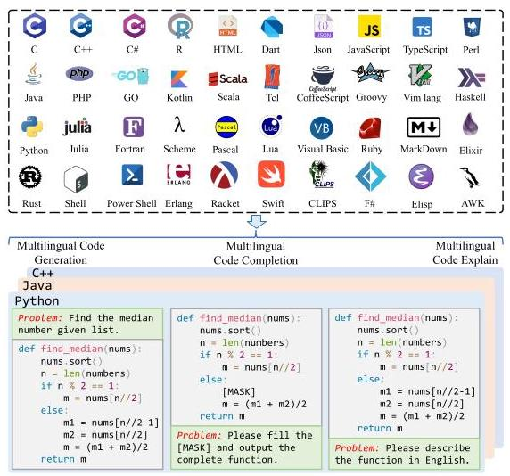
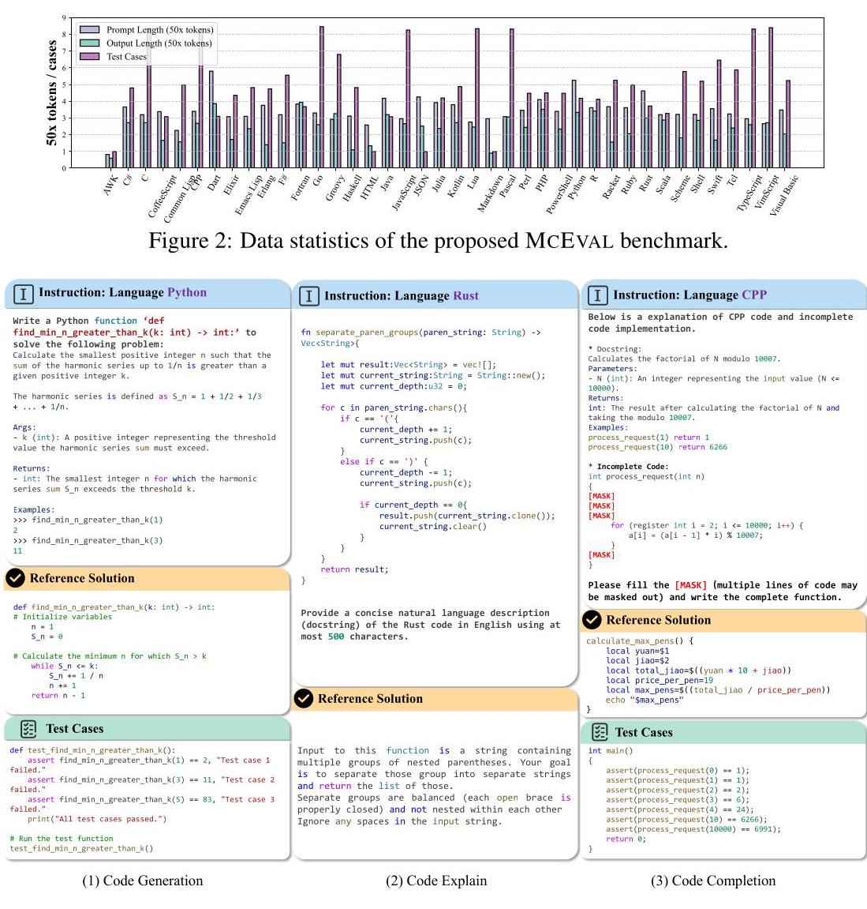
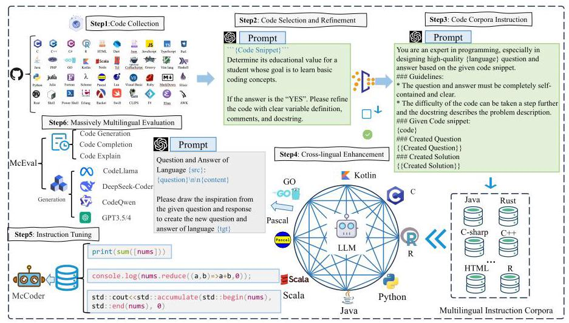
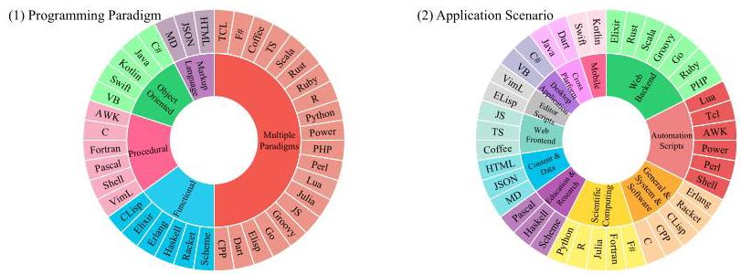
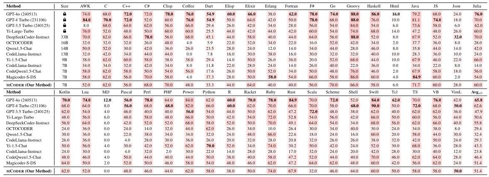

Abstract
Code LLMs are often benchmarked on Python-centric suites, with other languages sometimes derived by translation, which limits diversity. MCEVAL is a massively multilingual benchmark spanning 40 programming languages and about 16K test samples for generation, explanation, and completion. The work releases MCEVAL-INSTRUCT and trains MCODER on it. Experiments show a persistent gap between strong closed-source models and open-source systems across many languages; data and leaderboard are at mceval.github.io.
Contributions
- The paper focuses on systematically evaluating multilingual coding ability instead of only English coding tasks.
- This page uses the most display-friendly aggregate metric reported in the main results table.
Method & evaluation
- McEval introduces a massively multilingual coding benchmark covering 40 programming languages and about 16K samples.
- It evaluates code generation, completion, and understanding instead of focusing on a single language or task.
- The paper also releases MCEVAL-INSTRUCT and trains MCODER for multilingual code generation.
- Experiments show that closed-source models still hold a clear advantage across many languages.
- Its main contribution is pushing code evaluation from a few languages to a genuinely multilingual setting.
Evaluation metrics
Avg_all — Higher is better. Main multilingual code generation score reported in the paper. Score range: [0, 100].
Leaderboard
The leaderboard uses the code-generation Avg_all from the paper's main table. The paper also reports finer per-language results, but this page keeps the aggregate score as the primary leaderboard.
| # | Model | Avg_all | Source |
|---|---|---|---|
| 1 | GPT-4o | 65.2 | Official |
| 2 | GPT-4 Turbo | 63.4 | Official |
| 3 | DeepSeekCoder-6.7B | 54.3 | Official |
| 4 | GPT-3.5 Turbo | 52.6 | Official |
| 5 | Yi-Large-Turbo | 46.6 | Official |
Paper figures





At a glance
- FocusMassively multilingual code generation
- Primary metricAvg_all
- Displayed settingCode-generation results, official main table
- Models scored5
- Data updated2026-04-15